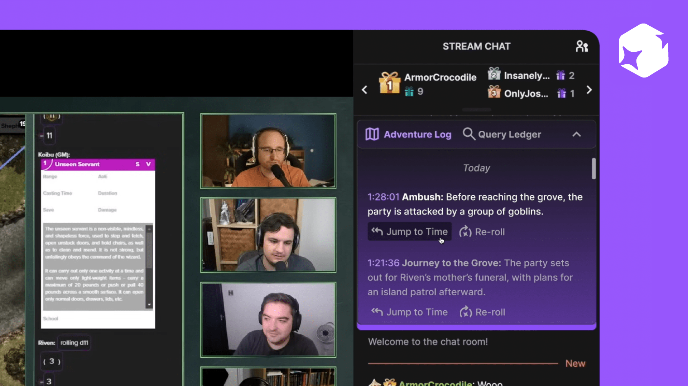

Atlas
An interactive web platform that visualizes user's social media consumption habits and connections.Data Visualization · Interaction Design · Code · ML
Life & Death : TB in Inuit Communities
A digital editorial prototype tracing Inuit Canadians’ fight against tuberculosis over time.Editorial Design · Data Visualization

Sijaan Am
Illustration and animation to spark interest in an endangered Eurasian language.Illustration · Motion Design
